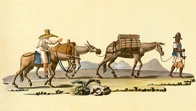

Muares
Pintura de Muares carregando carga
Os muares, animais de grande importância na história do Brasil, nunca poderão ser esquecidos. Graças ao trabalho de burros e mulas, o Brasil cresceu, evoluiu e se desenvolveu. Sobre o lombo dos resistentes burros e mulas, foram transportados alimentos, mercadorias diversas e, até mesmo, armas e munições.
E não para por aí, os muares trabalharam arduamente no transporte das maiores riquesas do Brasil colonial que foram o ouro das minas, o açúcar dos engenhos e o café das fazendas. Posteriormente, sua utilização foi extendida para o preparo do solo e a lida com o gado.
Os muares, mulas e burros, são animais híbridos resultantes do cruzamento de um jumento com uma égua, ou de um cavalo com uma jumenta. A mula é o indivíduo fêmea, resultante do cruzamento de um jumento com uma égua. O macho, resultante desse cruzamento, é chamado burro. Ambos pertencem à espécie denominada muar. O cruzamento das mesmas espécies genitoras, porém invertidos os sexos (portanto, cavalo x jumenta), dá origem a um animal diferente, o bardoto. Em algumas regiões do Brasil, os muares recebem, ainda, nomes diferentes e mulo, mu, besta, burro, macho, jerico, são alguns deles.